Module 7—Chemical Analysis
 Read
Read
© Laurence Gough/shutterstock
Titrations can provide very accurate data. One means to ensure accuracy is by doing multiple trials. Multiple trials allow for selecting the most consistent trials for further analysis. One sign of consistency is obtaining a similar endpoint colour between trials.
Work through “SAMPLE problem 8.4” on page 329 of your textbook to see how titration data from multiple trials is analyzed.
After working through this sample problem, you may wonder why only three trials were required in this titration. As stated earlier, a titration is repeated until consistent results are obtained, such as endpoint colour and titrant volumes that are within 0.2 mL of each other.
 Self-Check
Self-Check
SC 1. A 50.0-mL sample of HCl(aq) is titrated with 0.300-mol/L NaOH(aq). When the endpoint is reached, 35.0 mL of the titrant has been used. Calculate the concentration of the hydrochloric acid based on this one trial.
SC 2. A titration is performed to determine the concentration of KOH(aq) in a 40.0-mL sample. The endpoint is reached when 18.02 mL of 0.100-mol/L HNO3(aq) is added. Calculate the concentration of KOH(aq) based on this trial. If the manufacturer’s label for KOH(aq) says the concentration is 0.0480 mol/L, what is the percent difference for the experimental result?
SC 3. A 20.0-mL sample of calcium hydroxide is titrated with 0.100-mol/L hydrochloric acid until the endpoint is reached. The volume of titrant used for each trial is shown in the following table.
Trial |
1 |
2 |
3 |
Final Burette Reading (mL) |
22.7 |
45.2 |
67.6 |
Initial Burette Reading (mL) |
0.4 |
22.7 |
45.2 |
Using this data, calculate the concentration of the Ca(OH)2(aq).
Self-Check Answers
SC 1.
HCl(aq) |
+ |
NaOH(aq) |
→ |
H2O(l) |
+ |
NaCl(aq) |
| 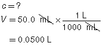 | 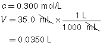 |
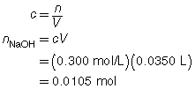 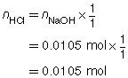
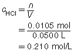
The concentration of the hydrochloric acid is 0.210 mol/L.
SC 2.
HNO3(aq) |
+ |
KOH(aq) |
→ |
KNO3(aq) |
+ |
H2O(l) |
| 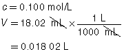 |
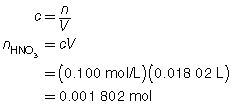 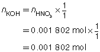
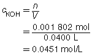
Based on the one trial, the concentration of KOH(aq) is 0.0451 mol/L.
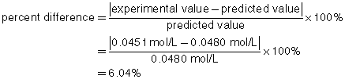
SC 3.
Trial |
1 |
2 |
3 |
Final Burette Reading (mL) |
22.7 |
45.2 |
67.6 |
Initial Burette Reading (mL) |
0.4 |
22.7 |
45.2 |
Volume of Titrant (mL) |
22.3 |
22.5 |
22.4 |
The three volumes agree within 0.2 mL and are used to calculate the average volume of HCl(aq) required.
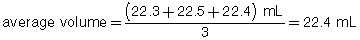
Ca(OH)2(aq) |
+ |
2 HCl(aq) |
→ |
CaCl2(aq) |
+ |
2 H2O(l) |
| 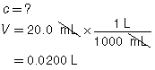 | 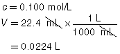 |
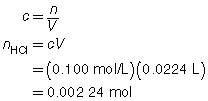 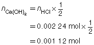
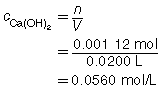
The concentration of Ca(OH)2(aq) is 0.0560 mol/L.